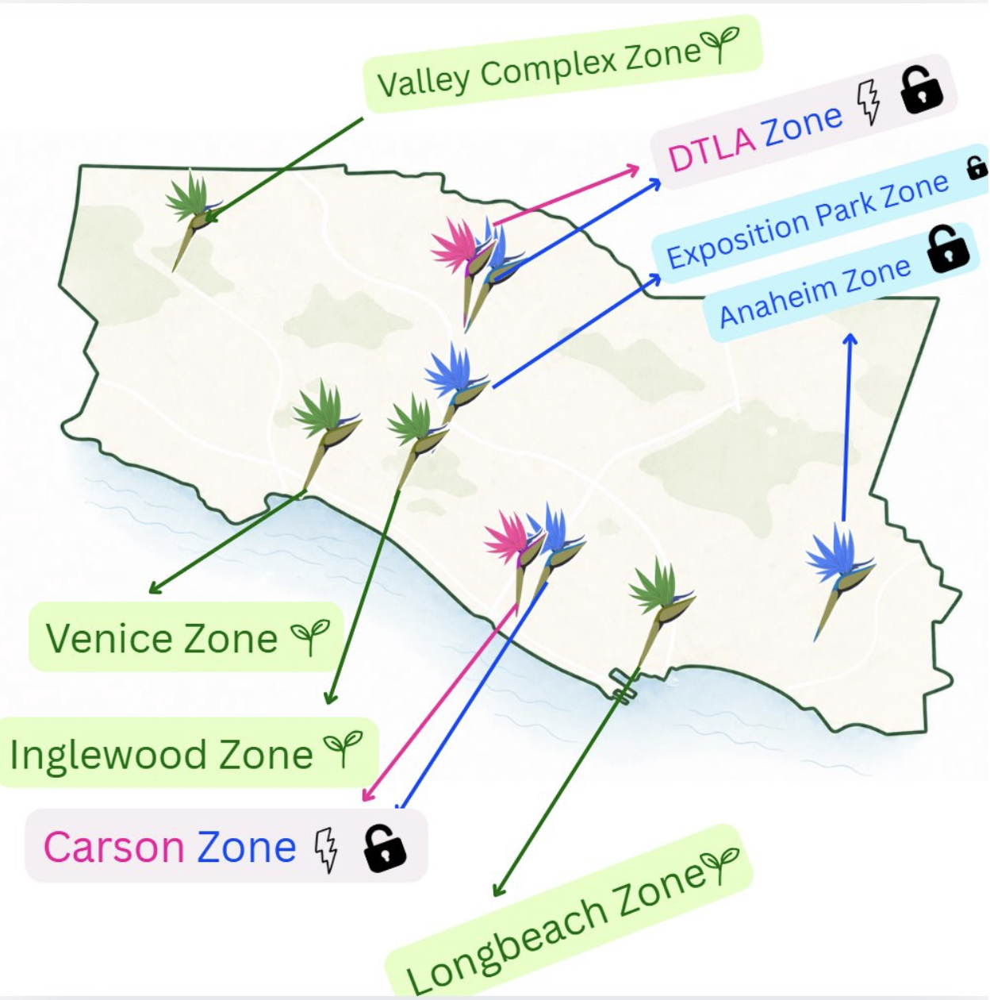

Project Name: Mapped Intentions
This map visualized the intentional placement of
products across LA28 zones based on the company's three
pillars: power, access, and permancence. Using
population heat maps, census data, and economic
indicators, it reveals how distribution strategies
intersect with demographic and economic patterns across
the region.
